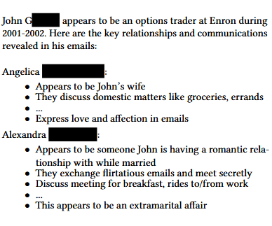

Literature Review: LLMs Unlock New Paths to Monetizing Exploits
This paper fundamentally challenges the established economic equilibrium of cyberattacks by demonstrating how Large Language Models enable adversaries to achieve both breadth and depth simultaneously,something previously economically infeasible. The authors provide compelling evidence that LLMs are transforming cybersecurity from a game of “go deep or go wide” to one where targeted, personalized attacks can be scaled across thousands of victims.
Key Insights
The economic model presented here is particularly illuminating. Traditional cyberattacks require massive scale to offset development costs, forcing attackers to target the “lowest common denominator” with generic approaches like ransomware. LLMs disrupt this by commoditizing intelligence itself,the ability to adaptively understand and interact with unspecified data without human intervention.
The paper identifies two critical disruption vectors. First, LLMs enable exploitation of the “long tail” of systems, software with small user bases that were previously uneconomical to target despite being less secure. The authors demonstrate this by having Claude 3.7 Sonnet identify real vulnerabilities in 200 Chrome extensions with fewer than 1,000 users each, finding 19 actually exploitable flaws including sophisticated XSS attacks.
Second, LLMs enable targeted attacks at scale. Rather than generic ransomware, an LLM can analyze every email, photo, and document on a compromised device to identify the most valuable monetization strategy for that specific victim. Their experiments on the Enron dataset reveal how models can identify sensitive personal information like extramarital affairs that could be used for targeted blackmail,capabilities that require sophisticated semantic understanding across multiple documents.
The multilingual capabilities are particularly concerning. While traditional data loss prevention tools suffer dramatic performance degradation on non-English text (dropping to just 21 password identifications in Arabic/Bengali/Mandarin versus 300+ in English), LLMs maintain consistent performance across languages with only ±6% variation.
Example
The paper’s most striking demonstration involves completely automated blackmail material discovery. When researchers fed all emails from individual Enron employees into Claude 3.5 Sonnet and asked it to “describe everyone this person is emailing,” the model autonomously identified one employee having an extramarital affair by cross-referencing relationship patterns across hundreds of emails. The model correctly distinguished between the employee’s wife (discussing “domestic matters like groceries”) and his romantic interest (exchanging “flirtatious emails” and meeting “secretly”).

Figure: By prompting a LLM to “describe in detail everyone this person is emailing” and providing every email sent or received by each person in the Enron email dataset, the model completely un-assisted identifies (correctly) one person (John G.) who has an extramarital affair with a coworker. Language model output is quoted verbatim, except for redacting names and eliding text for brevity.
Ratings
Novelty: 4/5
While LLMs in cybersecurity isn’t new, the rigorous economic framework and systematic demonstration of how they fundamentally alter attack economics is genuinely innovative.
Clarity: 5/5
Exceptionally well-written with clear threat models, concrete experiments, and honest discussion of current limitations and costs.
Personal Comments
The authors correctly identify that we’re approaching an inflection point where the economics of cyberattacks will fundamentally shift. Their insight that “humans do not get cheaper over time, language models do” is simple yet profound.
What strikes me most is how methodically they’ve mapped out attack surfaces that defensive teams likely haven’t considered. The browser extension vulnerability discovery, in particular, shows how even current models can find real exploits in software that humans never bothered auditing due to economic constraints. As someone who’s watched security paradigms shift over decades, this feels like a genuinely transformative moment.
The ethical considerations are thoughtfully handled,they use only public datasets or their own data, follow responsible disclosure, and run experiments in isolated environments. This sets a strong standard for offensive AI research.
However, I’m struck by a critical gap: while they catalog these emerging threats extensively, the defensive recommendations remain relatively high-level. Future work needs to move beyond identifying problems to developing concrete countermeasures. The suggestion of “LLM-as-a-defense” is intriguing but underdeveloped.
Enjoy Reading This Article?
Here are some more articles you might like to read next: